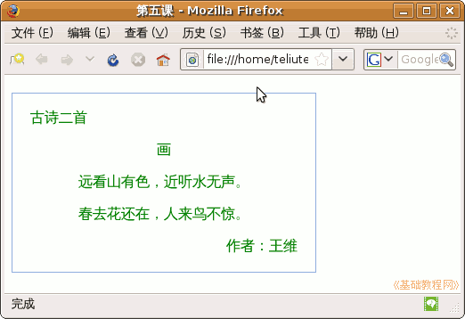

CSS 基础入门教程
作者：TeliuTe 来源：基础教程网
div 和 span 标签都可以用来指定样式，div 的作用范围较大，可以是一块区域，下面我们来看一个练习；
1、文本编辑器
1）打开记事本或 gedit、leafpad 文本编辑器，gedit 在查看菜单里选择“HTML”；
2）点菜单“文件－打开”命令打开上一节的 lx4 文件，再点“文件－另存为”命令，以“lx5.html”为文件名，保存一下文件；
3）修改一下标题，准备继续输入 div 的标签内容；
2、使用 div 标签
1）边框：在 <body> 标签后面按回车键，插入一行输入下面的内容；
<div style="border: #92b0dd 1px solid;">
在 </body> 标签之前插入一行，输入 </div> 结束标签；
2）border 属性显示一个是边框，冒号后面是颜色、粗细和实线，用空格分开，保存一下然后打开文件夹里的 lx5 看看边框的效果；
3）固定大小：默认边框跟随窗口大小，可以在 div 中指定区域大小，回来接着在 <div> 标签里输入下面的内容；
<div style="border: #92b0dd 1px solid; width:300px; height:200;">
4）这里的 width 是宽度，height 是高度，写的时候细心，保存一下再看一下指定大小后的页面显示；
5）内边距：默认文字是贴着左右边框，可以在 div 中设定，继续输入下面的内容；
<div style="border:#92b0dd 1px solid; width:300px; height:200; padding-left:20px; padding-right:20px;">
6）后面的 padding 是内边距，后面的单词是各个边，这里只设定了左右，还有上下 top 和 bottom，
保存一下，再打开看看网页效果；
7）外边距：这是 div 边框跟外面元素的距离，单独的 div 是跟窗口边框的边距，就像是书本的页边距，接着输入下面的内容；
<div style="border:#92b0dd 1px solid; width:300px; height:200; padding-left:20px; padding-right:20px; margin-top:20px;">
8）这儿的 margin 是外边距，距离外面边框的距离，这儿只设定了上边距 top，其他的根据需要也可以设定；
保存一下，看一下网页的效果；

本节学习了 div 标签的基本用法，如果你成功地完成了练习，请继续学习下一课内容；
本教程由86团学校TeliuTe制作|著作权所有
基础教程网：http://teliute.org/
美丽的校园……
转载和引用本站内容，请保留版权信息和本站链接。